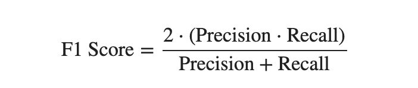
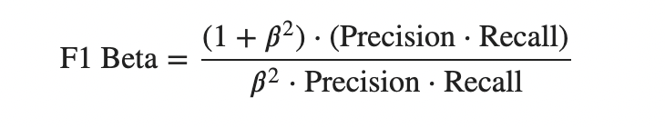
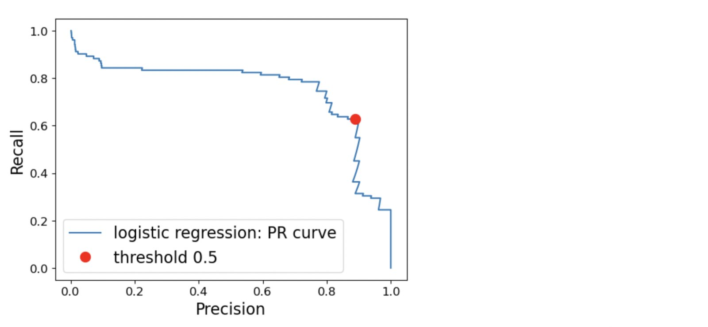
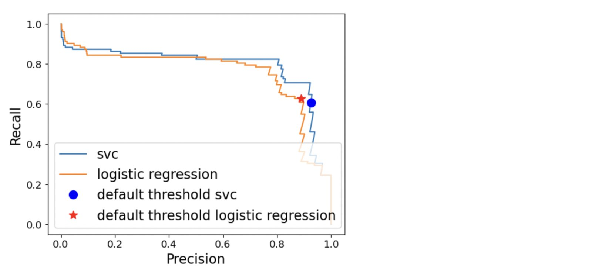
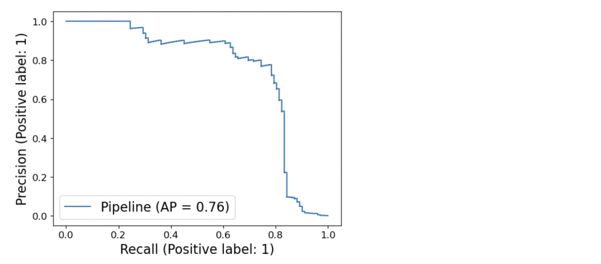

Tuning Classifiers on Imbalanced Data
When working on classification models, we usually found that our data have a difference number of members among each classes, some classes may have a majority while some classes have a low number of members, it is an imbalanced dataset. On this blog, I will reveal some useful techniques for tuning our classification models to have better result while working with the imbalanced dataset.

Choosing the right Classification Matrices
When working on classification problems, there are several matrices that can be derived from four fundamental indexes such as True Positive(TP), True Negative(TN), False Positive(FP), and False Negative(FN), therefore, it is important to understand all of these matrices, so we can choose the proper one for our project.
Precision: The ability to correctly identify positive predicted instances.
Recall: The ability to correctly identify actual positive instances. It is also known as True Positive Rate(TPR) or Sensitivity.
F1 Score: The combination(A harmonic mean) of Precision and Recall that gives us a one score value which could be used in hyperparameter optimization.

F1 Beta: The user-define weight of Precision and Recall version of F1 Score.

Choosing the appropriate metric for this problem will require a full understanding of the problem statement, the project background, the objective of the project, and some related policies of the company. Not only we will be able to develop and deliver the work correctly, efficiently, and sustainably, but most of these metrics are traded off with each other and have different effects on the problem differently. Missing a certain aspect will have a different cost to the project.
For example, in a fraud prediction problem where a bank would like to predict any fraud transactions, the bank would concerned and would like to have a high Recall value rather than a Precision because they do not want to miss any actual fraud transactions if they miss detecting any fraud transactions, it would cost huge dollars to the bank, but if they miss classify some safe transactions by predicted as fraud, they will need to spend little cost inspecting them. This example shows how each metric has different impacts on a problem.
Techniques for Imbalanced Dataset
Understanding our problem is important, understanding our data is important as well. Because of the nature of several data types, it will have special characters that we need to know, we therefore can apply the right solution to the dataset.
And yes, most of the datasets for classification problems will be imbalanced datasets. For instance, credit card fraud prediction data, spam mail classification data, or machine failure data. It means that we have some majority classes having multiple observations while some classes have just few instances.
We can easily spot imbalanced datasets just by running value counts of each class or checking the result of a dummy classification model whether it has major better-predicted classes.
We can handle this imbalanced data by the following methods,
Handle on the data itself
Oversampling method
Undersampling method
Random sampling
SMOTE
Handle in data splitting step When we split the data before training the model with cross-validation, some folds will have just a few or zero positive instances, setting a splitting method to stratify will help ensuring that each fold will have the same proportion of positive instances. This can be useful in multiclass classification problems.
Handle with training procedures When setting the model, we can set the class_weight parameter to balanced or specify the weights of each class directly. This way will help handle the imbalanced effect in our data.
Handling as anomaly detection problems In some cases, when we have a very low number of positive instances, these instances can be considered as an anomaly in the system and can be identified and detected with some anomaly detection methods such as
Isolation forest model
Auto-associative models
Auto-associative Kernel Regression model (AAKR)
Auto-associative Neural Network model (AANN)
Optimizing machine learning models
When optimizing machine learning models for classification problem, we have some methods that can help us adjust model parameters and achieve better result of our interested evaluation metrics.
Precision-Recall Curve
When we plot a confusion matrix of classification problems, we use the hard prediction of the machine learning model that predicts whether any instances are positive or negative with a default value of Threshold of the model.
For example, in Logistic Classifier, the Threshold of the Sigmoid function is set on default at 0.5. This will give a certain performance of Precision and Recall but it does not guarantee that this will be the best possible value for our problem. Varying this Threshold value(0.1-1.0) will change the outcome of Precision and Recall. The ideal PR graph should reach the top-right corner of the plot.
By plotting this Precision versus Recall with varying the threshold, we can see the whole picture of the model performance and can choose the best threshold value producing the best value of our interested evaluation metric.
For example in Q1.1 that we concern about the Recall, we can see from the graph below that we can have the best Recall value (around 0.8) while not sacrificing too much Precision(around 0.5) at the threshold of 0.3

The Precision-Recall curve can also be used to compare model performances among different classification models as well. Below is the comparison of the Logistic Regression model and the SVC model, we can see that the SVC model is better than the Logistic Regression in many areas and is closer to the top-right corner which is the idea value.

Average Precision Score
The Average Precision score provides a summarized value of the Precision-Recall Curve by calculating the area under the curve. This number can be useful in the hyperparameter optimization step.

Please be noted one key difference of F1 Score and AP Score,
F1 score is for a given threshold and measures the quality of predict method of the model.
AP score is a summary across thresholds and measures the quality of predict_proba method of the model.
Receiver Operating Characteristic Curve(ROC)
Similar to the Precision-Recall curve, the ROC curve evaluates the model performance of predict_proba with all possible thresholds by plotting the True Positive Rate(TPR) versus the True Negative Rate(FPR). The ideal ROC graph should reach the top-left corner of the plot.
TPR = Fraction of true positives out of all positive instances.
FPR = Fraction of false positives out of all negative instances.
Area Under Curve(AUC)
The AUC is a summarized value calculated from the ROC curve.
Choosing the right method for an imbalaced dataset
In normal classification problems, we can choose the PR curve or the ROC curve for selecting the best machine learning model, but choosing the right one for an imbalanced dataset is important.
There is an article published in 2015 claiming that the Precision-Recall curve is more suitable for imbalanced data classification problems than the ROC curve since the ROC curve may sometimes be misleading (Imbalanced Learning: Foundations, Algorithms, and Applications by Haibo He, Yunqian Ma).
Therefore, using the Precision-Recall curve may be a good idea for an imbalanced dataset.
Evaluate fairness of our machine learning model
Having a high value on our interested evaluation metric is good, but the model might sometimes be biased as well. We therefore need to analyze the performance of each group of our data as well.
For example, in this question, we might be fooled by a high Precision value of the model, but there might be some certain groups of people having lower performance compared to the others. Therefore, it is a best practice that we separate people into groups by aspects and evaluate the model performance of each group, and compare them.
The group in this case can be by gender(Male, Female, etc ..) or by age group(1-10, 11-20, 21-30, and so on)